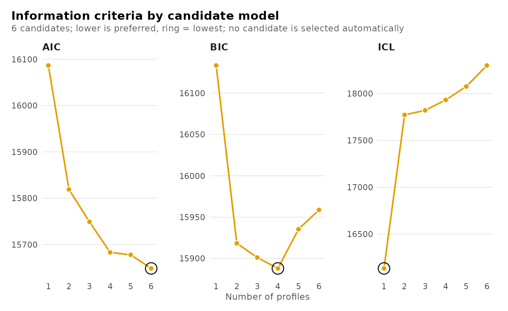
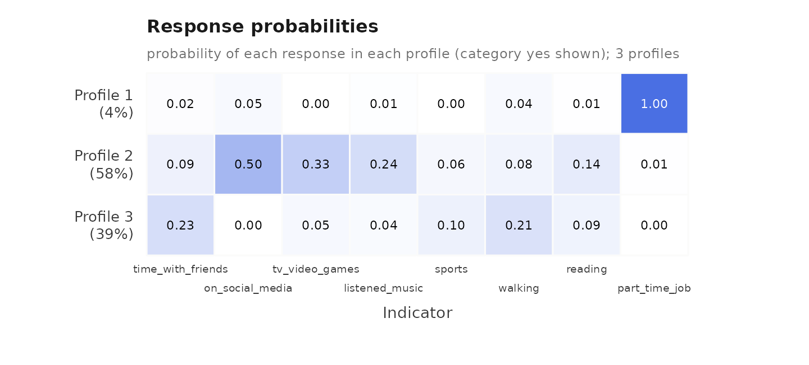
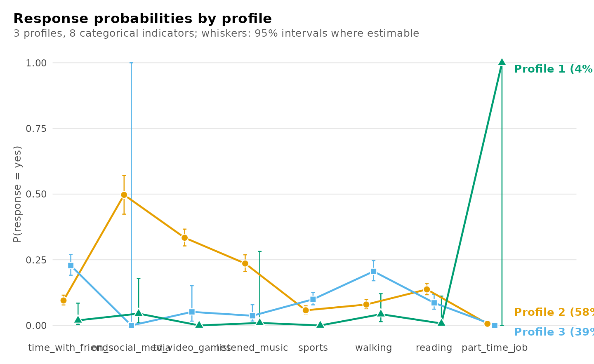
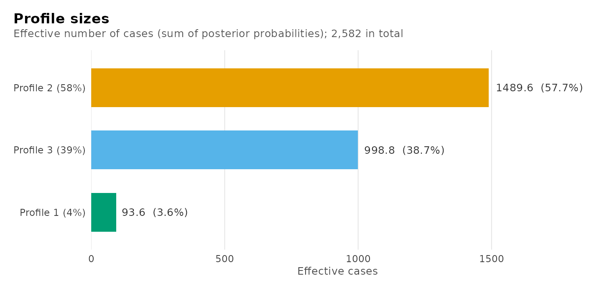
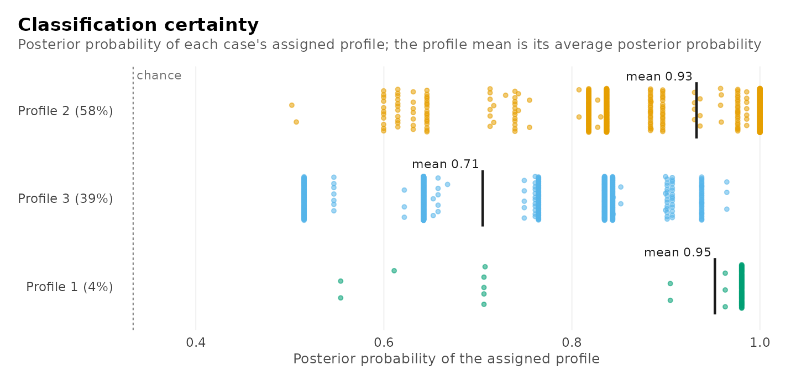
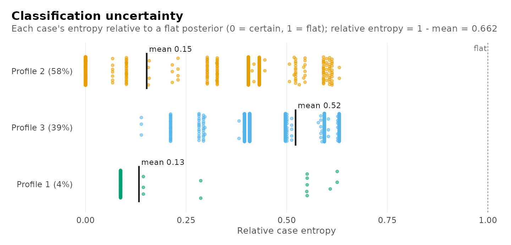
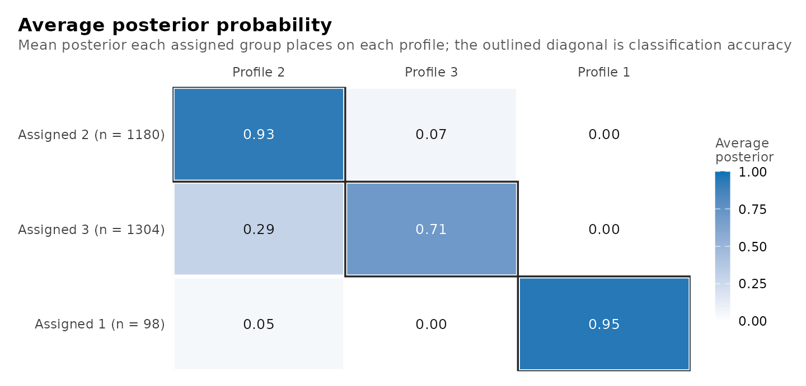

Latent class analysis: a complete workflow
Written by Mohammed Saqr and Sonsoles López-Pernas
Source:vignettes/articles/workflow-lca.Rmd
workflow-lca.RmdLatent class analysis (LCA) is a mixture model for categorical
indicators. It assumes that the observations come from a small number of
unobserved classes, and that within each class the indicators are
independent, each with its own response probabilities. This vignette
presents a complete single-level analysis: description of the data,
selection of the number of classes, estimation, interpretation,
evaluation of the classification, and the relation of the classes to a
distal outcome. The final section extends the model to two levels. In
the output of this package the classes of observations are labelled
profile_1, profile_2, and so on.
The estimation uses random starting values, so the seed is set once to make the results reproducible.
Data
The student_esm data contain 2,582 experience-sampling
reports from university students. At each report a student indicated
whether they had been engaged in each of eight activities, and rated how
happy, relaxed, worried and exhausted they felt. The aim of the analysis
is to identify typical combinations of activities.
activities <- c("time_with_friends", "on_social_media", "tv_video_games",
"listened_music", "sports", "walking", "reading",
"part_time_job")
descriptives(student_esm, activities)
#> variable n n_missing mean sd min max n_distinct
#> 1 time_with_friends 2582 0 NA NA NA NA 2
#> 2 on_social_media 2582 0 NA NA NA NA 2
#> 3 tv_video_games 2582 0 NA NA NA NA 2
#> 4 listened_music 2582 0 NA NA NA NA 2
#> 5 sports 2582 0 NA NA NA NA 2
#> 6 walking 2582 0 NA NA NA NA 2
#> 7 reading 2582 0 NA NA NA NA 2
#> 8 part_time_job 2582 0 NA NA NA NA 2The reports are nested in students. The first part of this vignette treats each report as an independent observation, which corresponds to the conventional single-level model. The nesting is taken into account in the final section.
Selecting the number of classes
enumerate_lca() estimates models with one to six classes
and returns the results in one table.
models <- enumerate_lca(student_esm, activities, n_classes = 1:6)
plot_enumeration(models)
summary(models)
#> Class enumeration: 6 candidates, 6 converged, 0 failed to fit
#> 3 distinct candidate(s) are minimal under some criterion.
#> No candidate is selected automatically. Choose one convention and keep it.
#> The candidates table shows 13 of its 37 columns; get_results(x, what = "candidates") returns all of them.
#>
#> -- candidates ------------------------------------------------------
#> candidate n_profiles log_likelihood n_parameters aic bic icl_individual
#> classes1 1 -8035 8 16086 16133 16133
#> classes2 2 -7892 17 15819 15918 17748
#> classes3 3 -7848 26 15749 15901 17820
#> classes4 4 -7807 35 15683 15888 17934
#> classes5 5 -7795 44 15678 15935 18074
#> classes6 6 -7771 53 15648 15959 18290
#> profile_entropy avepp_min avepp_mean avepp_below converged boundary
#> NA NA NA NA TRUE FALSE
#> 0.4887 0.7035 0.8222 1 TRUE FALSE
#> 0.6618 0.7046 0.8632 1 TRUE FALSE
#> 0.7142 0.7151 0.8307 2 TRUE FALSE
#> 0.7426 0.5196 0.8051 2 TRUE FALSE
#> 0.7481 0.6008 0.7803 4 TRUE FALSE
#>
#> -- best ------------------------------------------------------------
#> criterion convention candidate n_profiles n_group_classes value
#> aic <NA> classes6 6 1 15648
#> kic <NA> classes6 6 1 15704
#> bic groups classes4 4 1 15888
#> bic individuals classes4 4 1 15888
#> sabic groups classes4 4 1 15777
#> sabic individuals classes4 4 1 15777
#> caic groups classes4 4 1 15923
#> caic individuals classes4 4 1 15923
#> awe groups classes1 1 1 16220
#> awe individuals classes1 1 1 16220
#> ... 4 more rows. get_results(x, what = "best")
#>
#> -- criteria --------------------------------------------------------
#> criterion convention candidate n_profiles n_group_classes value
#> aic <NA> classes6 6 1 15648
#> kic <NA> classes6 6 1 15704
#> bic groups classes4 4 1 15888
#> bic individuals classes4 4 1 15888
#> sabic groups classes4 4 1 15777
#> sabic individuals classes4 4 1 15777
#> caic groups classes4 4 1 15923
#> caic individuals classes4 4 1 15923
#> awe groups classes1 1 1 16220
#> awe individuals classes1 1 1 16220
#> ... 4 more rows. get_results(x, what = "criteria")
#>
#> -- classification --------------------------------------------------
#> candidate n_profiles n_group_classes level class n_modal proportion_modal
#> classes2 2 1 individuals 1 1271 0.49225
#> classes2 2 1 individuals 2 1311 0.50775
#> classes3 3 1 individuals 1 1180 0.45701
#> classes3 3 1 individuals 2 98 0.03796
#> classes3 3 1 individuals 3 1304 0.50503
#> classes4 4 1 individuals 1 1258 0.48722
#> classes4 4 1 individuals 2 98 0.03796
#> classes4 4 1 individuals 3 1191 0.46127
#> classes4 4 1 individuals 4 35 0.01356
#> classes5 5 1 individuals 1 915 0.35438
#> estimated_n estimated_proportion average_posterior odds_correct_classification
#> 971.75 0.37636 0.7035 3.932
#> 1610.25 0.62364 0.9408 9.596
#> 1490.65 0.57732 0.9329 10.175
#> 93.58 0.03624 0.9521 527.981
#> 997.77 0.38643 0.7046 3.788
#> 1464.22 0.56709 0.8863 5.950
#> 94.00 0.03640 0.9554 567.495
#> 991.37 0.38396 0.7151 4.028
#> 32.41 0.01255 0.7658 257.212
#> 1229.08 0.47602 0.9174 12.231
#> relative_entropy
#> 0.4887
#> 0.4887
#> 0.6618
#> 0.6618
#> 0.6618
#> 0.7142
#> 0.7142
#> 0.7142
#> 0.7142
#> 0.7426
#> ... 10 more rows. get_results(x, what = "classification")
#>
#> -- deltas ----------------------------------------------------------
#> candidate n_profiles n_group_classes criterion value delta_profile from_profile
#> classes1 1 1 bic_groups 16133 NA <NA>
#> classes2 2 1 bic_groups 15918 214.97 classes1
#> classes3 3 1 bic_groups 15901 17.20 classes2
#> classes4 4 1 bic_groups 15888 13.17 classes3
#> classes5 5 1 bic_groups 15935 -47.40 classes4
#> classes6 6 1 bic_groups 15959 -23.35 classes5
#> delta_group_class from_group_class
#> NA <NA>
#> NA <NA>
#> NA <NA>
#> NA <NA>
#> NA <NA>
#> NA <NA>
#>
#> -- knees -----------------------------------------------------------
#> direction line criterion from to n_points knee_candidate distance
#> profiles 1 group class bic_groups classes1 classes6 6 classes2 0.5979
#> parameters all candidates bic_groups classes1 classes6 6 classes2 0.5979
#> knee_without_largest stable note
#> classes2 TRUE
#> classes2 TRUE
#>
#> -- tree ------------------------------------------------------------
#> tree level from_candidate from_class from_share to_candidate to_class to_share
#> tree individuals classes1 1 1.00000 classes2 1 0.37636
#> tree individuals classes1 1 1.00000 classes2 2 0.62364
#> tree individuals classes2 1 0.37636 classes3 1 0.57732
#> tree individuals classes2 2 0.62364 classes3 1 0.57732
#> tree individuals classes2 1 0.37636 classes3 2 0.03624
#> tree individuals classes2 2 0.62364 classes3 2 0.03624
#> tree individuals classes2 1 0.37636 classes3 3 0.38643
#> tree individuals classes2 2 0.62364 classes3 3 0.38643
#> tree individuals classes3 1 0.57732 classes4 1 0.56709
#> tree individuals classes3 2 0.03624 classes4 1 0.56709
#> mass share_of_from share_of_to
#> 0.376356 0.376356 1.000000
#> 0.623644 0.623644 1.000000
#> 0.101205 0.268906 0.175299
#> 0.476120 0.763449 0.824701
#> 0.033106 0.087964 0.913435
#> 0.003137 0.005031 0.086565
#> 0.242046 0.643130 0.626361
#> 0.144386 0.231520 0.373639
#> 0.441853 0.765345 0.779164
#> 0.001454 0.040120 0.002564
#> ... 60 more rows. get_results(x, what = "tree")
#>
#> 7 tables above, truncated to fit. get_results(x, what = ) returns any
#> of them whole, and get_results(x, what = "all") returns every one.The BIC is lowest for four classes, 13.2 points below the three-class model. The fourth class, however, contains 1.3% of the reports (about 32), which describe many activities at once; a class of this size is poorly supported, and the ICL, which penalizes classification uncertainty, is lower for three classes than for four. The ICL is lowest for one class, which has no uncertainty to penalize, and among the models with more than one class it is lowest for two; the two-class solution, however, has a relative entropy below 0.5 and therefore separates the reports poorly. The three-class model is retained.
Estimation
lca() fits a single-level latent class model.
fit <- lca(student_esm, activities, n_classes = 3)
fit
#> Latent class analysis: 3 classes
#> 2582 observations; 8 categorical indicators
#> Classes are labelled profile_1, profile_2, ... in every table.
#> Log likelihood: -7848.453248 | AIC: 15748.906 | BIC: 15901.171
#> Converged: TRUE | iterations: 39 | best log likelihood reached by 2 of 10 starts (10 converged)
#>
#> Class sizes profile_1 3.6% (94) profile_2 57.7% (1490) profile_3 38.7% (999)
#>
#> Response probabilities
#> indicator category profile_1 profile_2 profile_3
#> time_with_friends no 0.981 0.905 0.772
#> time_with_friends yes 0.019 0.095 0.228
#> on_social_media no 0.955 0.503 1.000
#> on_social_media yes 0.045 0.497 0.000
#> tv_video_games no 1.000 0.666 0.948
#> tv_video_games yes 0.000 0.334 0.052
#> listened_music no 0.990 0.764 0.963
#> listened_music yes 0.010 0.236 0.037
#> sports no 1.000 0.942 0.901
#> sports yes 0.000 0.058 0.099
#> walking no 0.957 0.920 0.794
#> walking yes 0.043 0.080 0.206
#> reading no 0.992 0.863 0.914
#> reading yes 0.008 0.137 0.086
#> part_time_job no 0.000 0.994 1.000
#> part_time_job yes 1.000 0.006 0.000
#>
#> Thresholds and standard errors: get_results(x, "responses").
#> Every other table: get_results(x, what = ), or get_results(x, "all").Interpretation of the classes
The heatmap shows, for each class, the estimated probability that the activity was reported.
plot_profiles(fit, what = "heatmap")
The largest class, comprising 58% of the reports, is characterized by screen-based activities: social media, television and video games, and music. The smallest class, 4% of the reports, consists almost entirely of reports of working at a part-time job. The third class, 39% of the reports, has elevated probabilities of spending time with friends, walking and sport, and a probability of social media use close to zero. The same probabilities are shown below as profiles across the activities, with 95% confidence intervals where the probability is not on its boundary.
plot_responses(fit)
#> Warning: The fitted likelihood still carries a score worth 1.6% of a standard error;
#> refit with a tighter `tol` before using Wald inference.
The probabilities with their standard errors. Several are estimated at zero or one; a standard error is not defined on the boundary of the parameter space, so those are held at their bound and have none.
head(get_results(fit, "responses"), 8)
#> Warning: The fitted likelihood still carries a score worth 1.6% of a standard error;
#> refit with a tighter `tol` before using Wald inference.
#> profile indicator category probability threshold probability_standard_error
#> 1 1 time_with_friends no 0.9807 3.9263 0.01497
#> 2 2 time_with_friends no 0.9050 2.2543 0.00945
#> 3 3 time_with_friends no 0.7720 1.2198 0.02004
#> 4 1 time_with_friends yes 0.0193 NA 0.01497
#> 5 2 time_with_friends yes 0.0950 NA 0.00945
#> 6 3 time_with_friends yes 0.2280 NA 0.02004
#> 7 1 on_social_media no 0.9550 3.0547 0.03352
#> 8 2 on_social_media no 0.5027 0.0108 0.03788Classification quality
diagnostics() reports the classification measures and
draws the four classification plots: the effective size of each class,
the distribution of the posterior probability of each report’s assigned
class, each report’s contribution to the classification entropy, and the
average posterior probability matrix, which shows which classes are
confused with which.
diagnostics(fit)



#> Diagnostics: Latent class analysis, 3 classes
#> 1 check needs attention: pairs dependent within a class
#>
#> Estimation
#> ok best start converged yes
#> info best log likelihood reached by 2 of 10 starts
#> ok starts failed or unfinished 0 of 10
#> ok estimates at a bound no
#>
#> Class size
#> info smallest class individuals 3.6% (n = 94, class 1)
#> info modal vs estimated proportions individuals largest gap 0.120
#> ok classes with no assigned unit individuals 0 of 3
#>
#> Classification
#> info relative entropy individuals 0.662
#> info lowest average posterior individuals 0.705 (class 3)
#> info lowest odds of correct classification individuals 3.8 (class 3)
#>
#> Local independence
#> check pairs dependent within a class 9 of 84 tested pairs BH-adjusted p < 0.05
#> largest: listened_music x walking in profile_2, residual 0.110, adjusted p <1e-04; consider local_dependence = or a full covariance model
#>
#> Information
#> info log likelihood, parameters, BIC -7848.45, 26, 15901.17
#>
#> Every check with its reference: get_results(x, "checks"). Other tables: get_results(x, what = ).The relative entropy of 0.66 indicates a moderately clear classification.
Local dependence
The latent class model assumes that the activities are independent within each class. The bivariate residual of a pair of activities compares their observed co-occurrence within a class with the co-occurrence the model implies, and a large value indicates a dependence the classes do not explain. The p-value refers this Pearson statistic to a chi-square distribution that ignores the estimation of the model’s table, which makes it very conservative: in simulated data from a correctly specified latent class model it rejected 0.25% of pairs per class, and 0.08% pooled, at a nominal 5%. A pair that passes the filter below is therefore strong evidence of dependence, but a pair that does not pass it is not evidence of independence.
subset(get_results(fit, "residuals"), p_adjusted < 0.01)
#> profile indicator_1 indicator_2 kind observed expected residual
#> 3 profile_2 listened_music walking categorical 0.1099 4.24e-17 0.1099
#> 4 profile_2 listened_music reading categorical 0.0881 1.03e-16 0.0881
#> 5 profile_2 sports walking categorical 0.0879 1.73e-16 0.0879
#> 6 profile_2 listened_music sports categorical 0.0874 0.00e+00 0.0874
#> 8 profile_2 time_with_friends walking categorical 0.0762 3.56e-17 0.0762
#> 9 profile_2 on_social_media listened_music categorical 0.0697 5.57e-17 0.0697
#> effective_n statistic df p_value p_adjusted
#> 3 1490 17.98 1 2.23e-05 2.23e-05
#> 4 1490 11.57 1 6.71e-04 6.71e-04
#> 5 1490 11.52 1 6.89e-04 6.89e-04
#> 6 1490 11.38 1 7.43e-04 7.43e-04
#> 8 1490 8.65 1 3.27e-03 3.27e-03
#> 9 1490 7.23 1 7.17e-03 7.17e-03The largest residual is that of listening to music and walking in
class 2 (18). local_dependence names pairs of categorical
indicators that are modelled jointly within each class: the pair then
has its own joint distribution in every class, and the other activities
remain independent given the class.
dependent <- lca(student_esm, activities, n_classes = 3,
local_dependence = "listened_music:walking")
get_results(dependent, "local_dependence")
#> pair kind profile item_1 category_1 item_2
#> 1 listened_music:walking categorical 1 listened_music no walking
#> 2 listened_music:walking categorical 1 listened_music no walking
#> 3 listened_music:walking categorical 1 listened_music yes walking
#> 4 listened_music:walking categorical 1 listened_music yes walking
#> 5 listened_music:walking categorical 2 listened_music no walking
#> 6 listened_music:walking categorical 2 listened_music no walking
#> 7 listened_music:walking categorical 2 listened_music yes walking
#> 8 listened_music:walking categorical 2 listened_music yes walking
#> 9 listened_music:walking categorical 3 listened_music no walking
#> 10 listened_music:walking categorical 3 listened_music no walking
#> 11 listened_music:walking categorical 3 listened_music yes walking
#> 12 listened_music:walking categorical 3 listened_music yes walking
#> category_2 probability independent ratio covariance correlation
#> 1 no 7.66e-01 0.761730 1.01e+00 NA NA
#> 2 yes 2.18e-01 0.222601 9.79e-01 NA NA
#> 3 no 7.49e-03 0.012125 6.18e-01 NA NA
#> 4 yes 8.18e-03 0.003543 2.31e+00 NA NA
#> 5 no 9.37e-01 0.937446 9.99e-01 NA NA
#> 6 yes 4.75e-02 0.046722 1.02e+00 NA NA
#> 7 no 1.58e-02 0.015080 1.05e+00 NA NA
#> 8 yes 1.00e-10 0.000752 1.33e-07 NA NA
#> 9 no 7.20e-01 0.703997 1.02e+00 NA NA
#> 10 yes 3.81e-02 0.053593 7.10e-01 NA NA
#> 11 no 2.10e-01 0.225262 9.31e-01 NA NA
#> 12 yes 3.27e-02 0.017148 1.91e+00 NA NAThe table gives each class’s joint probabilities of the pair beside
the products of its marginal probabilities, which are the probabilities
under independence, and their ratio. The two models describe the same
data and are compared with compare_models().
compare_models(independent = fit, dependent = dependent)
#> Model comparison
#>
#> Model Classes k LogLik BIC ΔBIC Weight ICL Entropy Min AvePP < 0.8
#> ----------- ------- -- -------- -------- ---- ------ -------- ------- --------- -----
#> independent 3 26 -7848.45 15901.17 0.00 0.561 17820.27 0.66 0.71 1
#> dependent 3 29 -7836.91 15901.66 0.49 0.439 17816.33 0.66 0.70 1The joint model raises the log likelihood by 11.5 at the cost of 3 parameters, and BIC is lower for the independent model. The dependence is present in the data, and the three classes describe the activities about as well without modelling it.
Classes and a distal outcome
three_step() estimates the mean of an outcome within
each class. It uses the BCH method, which applies the inverse estimated
classification-error matrix to modal class assignments (Bolck, Croon and
Hagenaars, 2004). These corrected weights can be negative;
posterior-probability weighting is the separate
method = "proportional" option. The outcome here is the
happiness rating.
happiness <- three_step(fit, student_esm, outcome = "happy")
happiness
#> Distal outcome by class (bch, 95% CI)
#>
#> Class Mean 95% CI SE Effective n
#> ----- ---- ------------ ----- -----------
#> 1 4.53 [4.22, 4.83] 0.156 88.80
#> 2 4.63 [4.53, 4.73] 0.051 957.30
#> 3 5.30 [5.16, 5.43] 0.068 549.14Happiness is highest in the class of reports away from screens (5.30 on the seven-point scale), and lower in the screen-based class (4.63) and the work class (4.53).
Extension to two levels
Each student contributes many reports, so the reports are not
independent. When the student identifier is supplied as id,
multilca() estimates a two-level model: the classes of
reports are retained, and the students are in addition grouped into
latent classes that differ in the proportion of their reports belonging
to each class.
two_level <- multilca(student_esm, activities, id = "student",
n_profiles = 3, n_group_classes = 2)
get_results(two_level, "profile_probabilities")
#> group_class profile probability group_class_probability
#> 1 1 1 0.2264 0.36
#> 2 1 2 0.1052 0.36
#> 3 1 3 0.6685 0.36
#> 4 2 1 0.2513 0.64
#> 5 2 2 0.7271 0.64
#> 6 2 3 0.0216 0.64The two-level model is presented in detail in
vignette("lca").